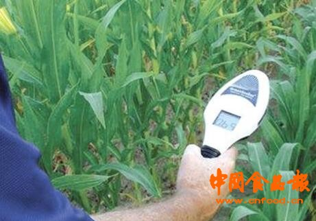

精准育种 微生物 大数据 科技创新——未来农业的出路
在不断涌现的农业技术背后，是朝气蓬勃的农业初创企业和看好农业新技术前景的投资人。2015年，全球农业投资达到前所未有的100亿美元（约650亿元人民币），对农业技术的风险投资高达46亿美元（约300亿元人民币），创历年新高。密集涌入的资金为农业领域带来了崭新的技术，加快了农业技术创新的步伐，不断有新技术被运用到农业领域当中。而在已开发的技术领域中，例如农业生物技术，也吸引了更多企业和研究者的加入。 世界粮食奖获得者傅瑞磊博士（Dr. Robert Fraley），日前在出席北京召开的2016世界生命科学大会时，接受了记者的专访。作为在农业科研领域钻研超过30年的资深专家，对于未来农业的发展，他有着深深地思考。 “毋庸置疑，技术和资金的投入加快了现代农业技术进步的步伐。”综观整个行业，傅瑞磊博士认为有三项技术——精准育种、微生物和大数据在农业应用上的进步格外引人注目。
精准育种让作物育种变得更快、更准 种子是农作物的基础，培育出产量更稳定、抗逆性更强的优秀种子是历代育种家不懈努力的目标。然而，传统的作物育种是一项耗时耗力的工作，往往需要7到8年才能完成。多年的经验让傅瑞磊确信：未来，基因编辑等精准育种技术让作物育种变得更快、更准。 据傅瑞磊介绍，基因编辑技术的兴起为作物培育新品种带来了更多的可能性。对于一些农作物来说，拥有抗旱、抗虫、抗病等特性变得切实可行；对于另外一些作物，基因编辑技术能够使它们更好地满足消费者的需求。 微生物可以部分替代化学产品 除了精准育种技术外，微生物对农业也有大用途。“微生物的世界很神奇。” 傅瑞磊对这些肉眼很难观察到的微生物未来在农业中的作用充满期待。 微生物存在于世界的各个角落，每一捧土壤里，就蕴含着500亿个微生物。进一步的研究表明，微生物可以变成农民手中有用的工具：它们不仅可以与传统化学制剂相辅相成，有时还可以部分替代化学产品，这使得农民在增产粮食的同时，减少环境影响，一举两得。 傅瑞磊举例介绍说，有一些土壤中的微生物可以帮助植物更好地吸收土壤中的营养，帮助植物健康生长。例如一种有解磷能力的真菌可以在土壤中释放化合物，分解土壤和磷肥之间的结合，使磷更容易被作物吸收。还有一种能够与作物根系形成共生体的真菌（Mycorrhizae，又称菌根），可以帮助作物抵抗干旱、盐分、重金属等不利环境，帮助作物健康成长。 据介绍，为了挖掘微生物在农业中的潜力，已经有国际农业公司在寻找能够帮助作物的微生物解决方案。截至目前，在已经进行的实验中，科学家们发现了能够帮助作物更好地提取营养以及帮助作物根系更健康地发育等不同类型的微生物种群。资料显示，在大田实验中，这些微生物能够帮助玉米每亩增产16.7公斤，大豆每亩增产6.7公斤。 大数据让农业需要更精准、更智能 在农作物生产过程中，从生产规划、种植前准备、种植期管理，直到采收，农民需要做出40-50项决策。过去，人们多依赖传统经验。然而，这40-50项决策环环相扣，任何一项决策的失误都会影响产量。复杂的全球性挑战面前，农业需要更精准、更智能。精准农业因此应运而生。 “你能想象不久的将来，专业的农业服务也将出现在你的‘购物车’里吗？“傅瑞磊认为网络在农业上的应用决不能小觑。 据傅瑞磊介绍，精准农业是基于信息技术平台，通过卫星成像和传感器采集天气、土壤、作物数据，从而做出数据分析并提出建议，使农民高效决策，在高效利用资源的同时优化生产力。精准农业的核心是数据科学。通过移动设备和网络软件，人们可以对种子遗传信息、气候、土壤等方面的数据进行收集和处理。通过对数据的处理分析，帮助农民在田块的播种、施肥和作物收割等方面更快地做出更明智的决策，以最大限度地提高农作物产量、提高资源利用效率，并降低风险。 据了解，目前该技术已经引起了一些农业公司的关注。今年8月，美国某公司就宣布，其旗下气候公司搭建的一套农业服务平台已经很好地服务于美国农民：近1亿英亩（约6亿亩）农田在该平台注册，农民用户通过App挑选和购买所需的数据服务，如同网络购物，尽在咫尺，私人订制。 据介绍，该平台里的应用软件众多，其中一种叫做氮顾问的软件，通过分析以往的氮肥数据可以预测农田未来的氮需求，如通过用户自定义的用量来预测未来氮肥消耗趋势。在大数据的支持和辅助下，农民可以施用适量的氮肥，最大限度地降低肥料匮乏和浪费的风险。 “未来35年里，人类需要的粮食将超过过去一万年间的总和。因此自然资源，如水和土壤等会变得更加珍贵，而气候变化加剧会影响全球。”据傅瑞磊介绍，氮不但是玉米最需要的肥料之一，也是主要的温室气体排放和土壤污染源泉。如何在保证产量和减少环境危害之间找到平衡是困扰现代农民的一大问题。“在众多全新的解决方案背后，是海量与精准的数据采集与分析，农业的未来将是数据科学施展才华的天空。”傅瑞磊确信。 滋养产业“新星”需要多一些传播 “作物生长需要阳光和雨露，科技创新也需要传播和交流。一些技术虽然早已扎根于大众的生活，但它们的贡献却鲜为人知。”在傅瑞磊看来，在农业加速科技进程的同时，科学传播与公众沟通的作用越发突出。 以新兴的生物技术RNA干扰技术为例。RNA干扰是一种自然界中天然存在的基因表达调控机制，它只是在基因表达水平上进行调控，而不对植物基因组进行修饰，能够通过干扰基因表达而暂时关闭一个特定基因的功能。值得一提的是，RNA干扰这一机制的发现成就了两项诺贝尔奖，并引发了医药行业的激烈竞争，业内竞相利用这一机制研发能够阻断致病基因的新药。农业科学家目前已将这一机制运用在农作物之上，帮助作物抵御病虫害。如在作物叶片上喷洒能够渗透作物细胞的RNA干扰喷雾制剂，制剂中的RNA会抑制特定基因的表达，以降低专吃叶片的害虫的危害。 这种技术还能保护蜜蜂的健康。一种寄生在蜜蜂体内的害虫蜂螨会让蜜蜂产生健康问题，而利用RNA干扰则可控制蜜蜂体内蜂螨的扩散，同时对蜜蜂不会产生影响，保护蜜蜂种群免受害虫的困扰。 傅瑞磊呼吁：“科学家们正在积极探索满足2050年全球100亿人口的粮食需求的科学方法，但这些方法需要被大众和监管机构所接受才能得到普及。希望科技界的同仁们能够在科研之外，积极参与科学传播，加快新技术的普及和应用。”本报记者 杨晓晶 链接 傅瑞磊 (Robert Fraley)，孟山都公司执行副总裁兼首席技术官，出生于美国伊利诺伊州的一个家庭农场，于80年代带领团队进行了世界上首次转基因农作物的大田试验，并于1996年推出了抗草甘膦的转基因大豆和转Bt抗虫基因的转基因棉花，因而被誉为“农业生物技术之父”。因对农业生物技术的贡献傅瑞磊获得过多项荣誉，包括： 2013年被授予农业界最权威的科学奖、有着农业诺贝尔之称的“世界粮食奖”(World Food Prize ); 2008年获得美国国家科学院“科学产业应用奖’（National Academy of Science Award for the Industrial Application of Science）； 1998年获得美国克林顿总统颁发的“国家技术奖章” （National Medal of Technology from President Clinton）等。